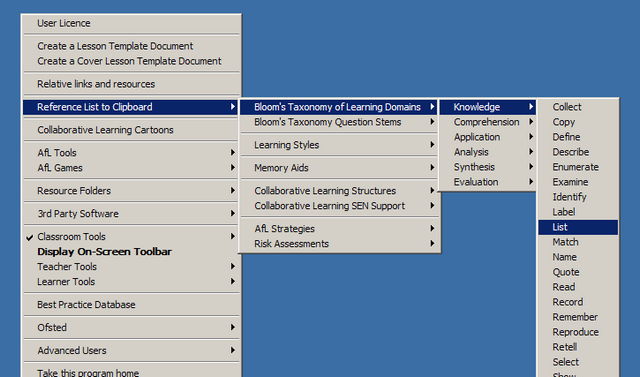
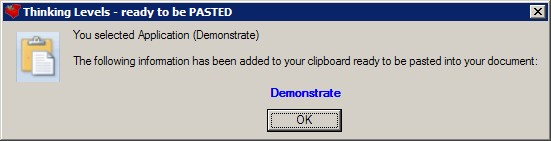

Reference Lists
The Teacher Toolkit is full of useful lists, including: Bloom's Taxonomy of Learning Domains, activities for a range of Learning Styles, Memory Aids, Collaborative Learning Structures, AfL Strategies and built in Risk Assessments.
Right click on the Teacher Toolkit icon (in your system tray) and select one:

When you do, it will place the information on your clipboard:

You can now add this to your planning document in word by clicking PASTE.